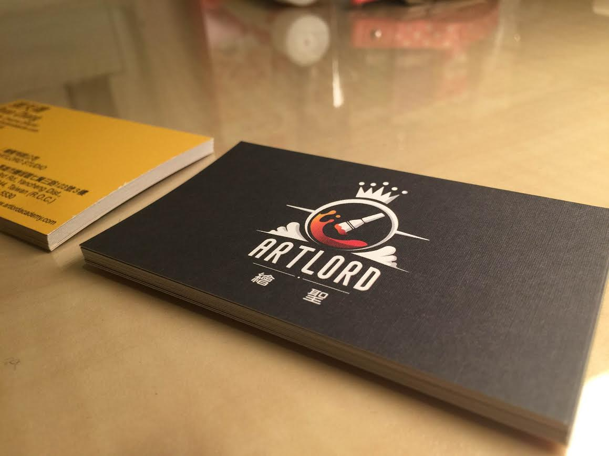

The Artlord Studio Logo Design project involved the creation of a comprehensive visual identity for a creative production studio. The goal was to craft a brand that felt both professional and imaginative, reflecting the studio's focus on high-end visualization and interactive content.
As Creative Director, I led the branding process from initial concept to final execution. I designed the logo mark, selected the typography and color palette, and applied the identity across various touchpoints including business cards, stationery, and the studio's website.

The design focused on "creative authority." We used bold, geometric forms and a high-contrast palette to ensure the logo remained legible and impactful across different scales. The business card design emphasized tactile quality, using a clean layout that lets the brand mark take center stage.
Role: Creative Director
Type: Branding / Visual Identity
Year: 2014
Studio: Artlord Studio
Tools & Tech: Adobe Illustrator, Adobe Photoshop, Adobe InDesign
{kind=link}